Avec Cubanim, on pilote les visuels d’un spectacle en faisant tourner des cubes. Nous l’avons conçu avec des adolescents en situation de handicap, dont certains ont du mal à saisir ou à manipuler des objets.
Contexte et objectif
Projet étudiant de huit semaines à L’École de design Nantes Atlantique, en partenariat avec Stereolux et APF France handicap. Le sujet : le VJing, c’est-à-dire créer et manipuler des visuels en temps réel sur scène.
Notre objectif : que chaque participant puisse lancer une animation au bon moment et la faire évoluer pendant tout le spectacle, avec des gestes adaptés à ses capacités de manipulation.
Le contexte du spectacle
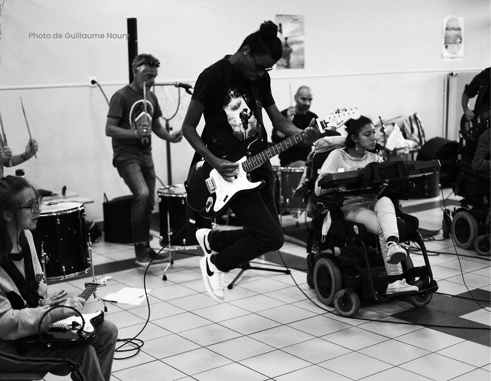
Une pratique collective
le projet prend place dans un contexte de pratique musicale collective.
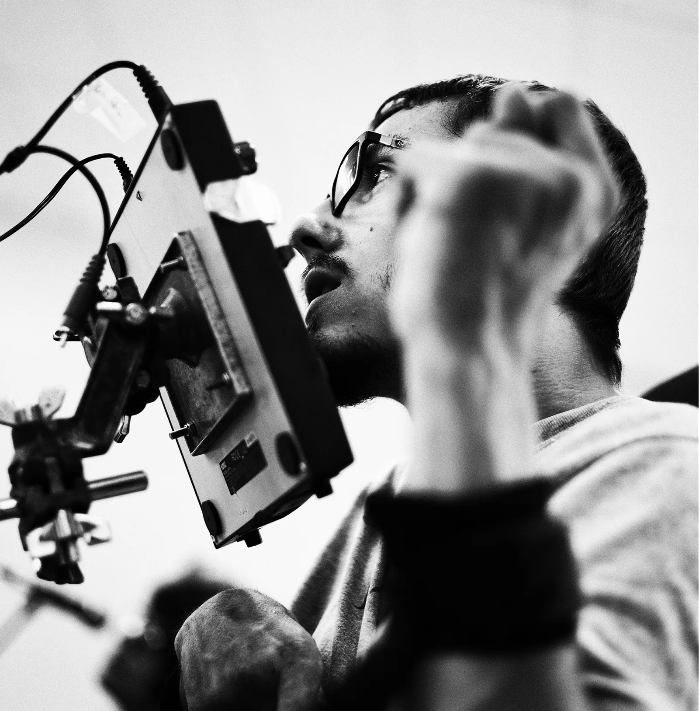
Les usagers
le projet s’adresse à des adolescents en situation de handicap ; pour certains, la manipulation d’un objet peut être difficile.
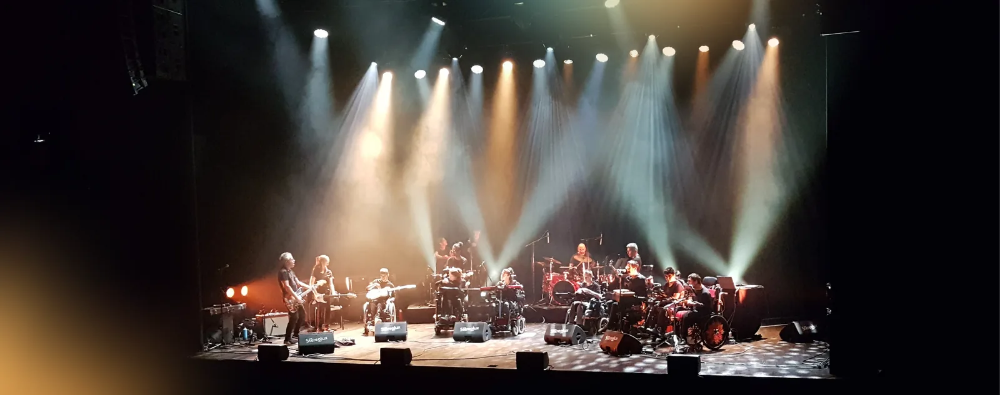
Sur scène
Cubanim propose une façon de prendre part aux visuels d’un spectacle.
Recherche et exploration
Nous sommes partis des besoins des participants et de leurs difficultés de manipulation. En équipe, nous avons exploré plusieurs façons de commander les visuels, puis confronté nos propositions à des personnes d’APF France handicap. Les essais de manipulation ont fait évoluer les pistes jusqu’au choix de la solution.
J’ai participé aux tests et à un audit d’accessibilité.
Chercher et essayer
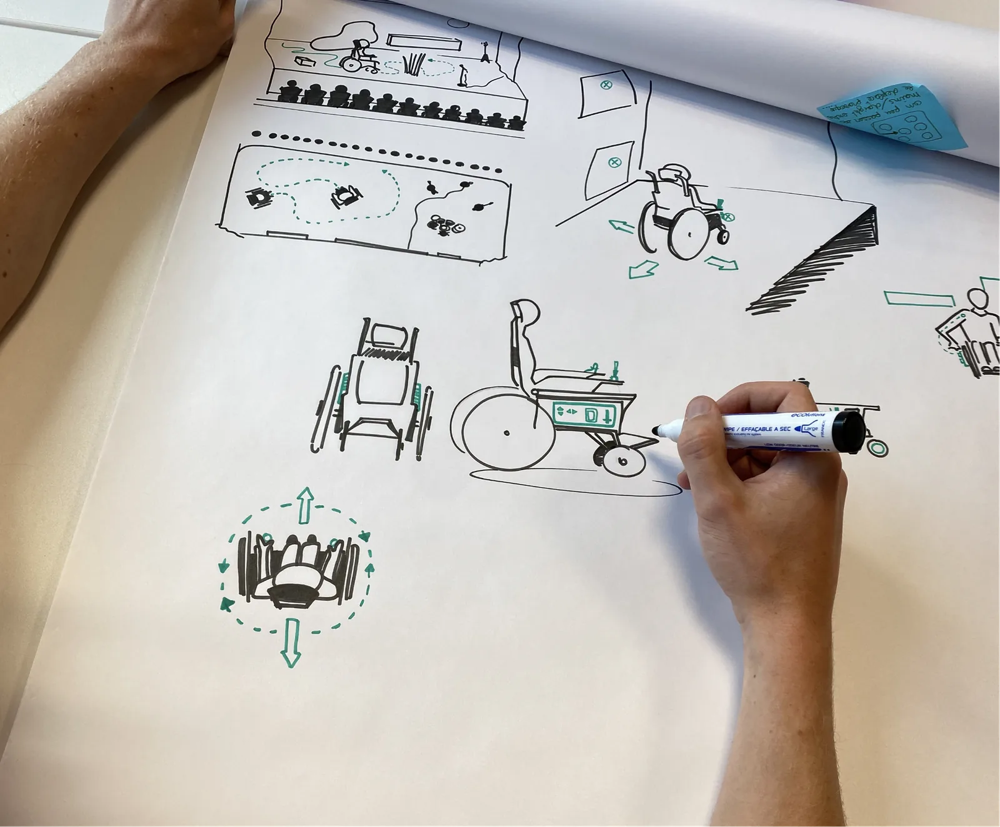
Esquisser des pistes
des croquis pour explorer différentes façons de commander les visuels.
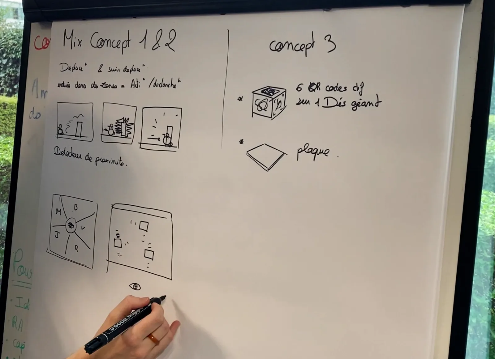
Comparer les idées
mise en commun de plusieurs propositions avant le prototypage.
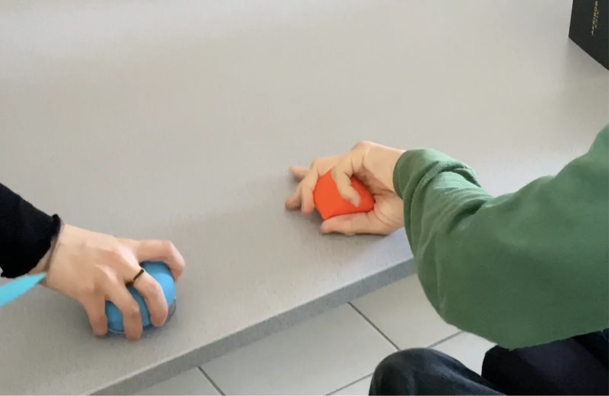
Essayer la manipulation
des essais de gestes avec des objets simples.
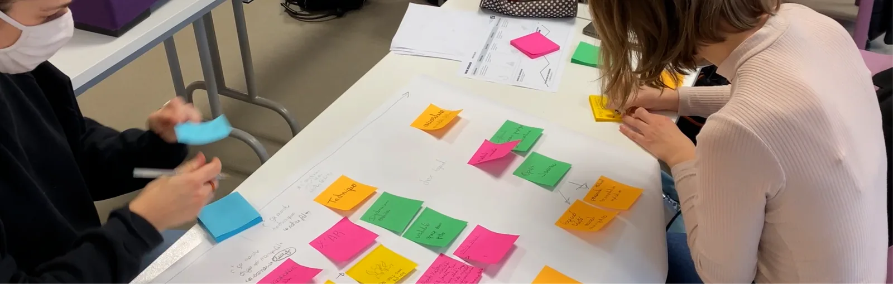
Faire évoluer les pistes
les retours ont nourri le choix de la solution.
La solution : un cube pour un paramètre
Des cubes montés sur des axes, dans un support en bois. Chaque cube contrôle un paramètre de l’animation : taille, position, couleur ou forme. En tournant un cube, on présente un marqueur à une caméra, qui applique le réglage correspondant au visuel.
Des repères graphiques et colorés distinguent les quatre commandes. Le choix était volontaire : un geste simple sur un objet, plutôt qu’une interface complexe, pour que le pilotage reste accessible.
Fonctionnement du dispositif
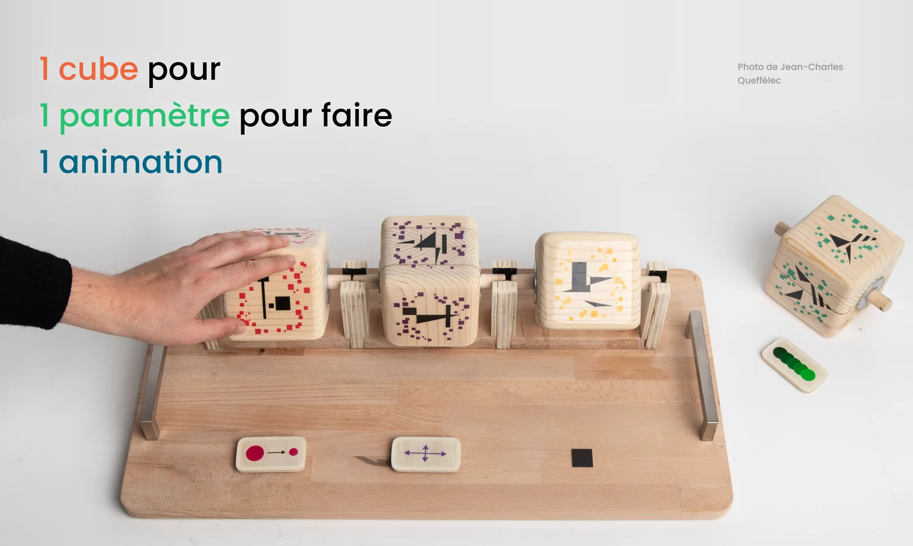
Manipuler les cubes
chaque cube correspond à un paramètre de l’animation.
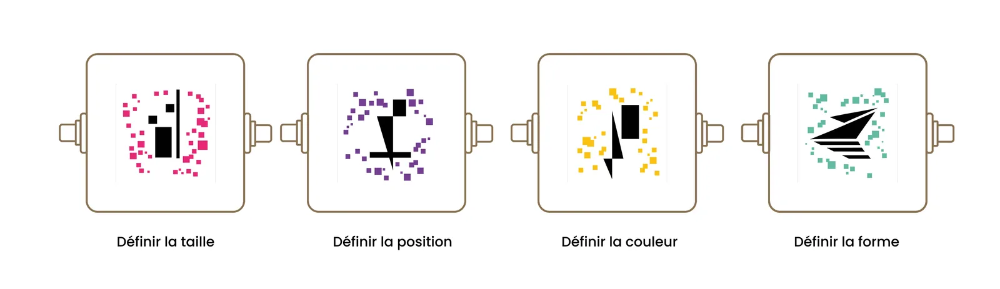
Quatre paramètres
les repères visuels permettent de distinguer les quatre commandes.
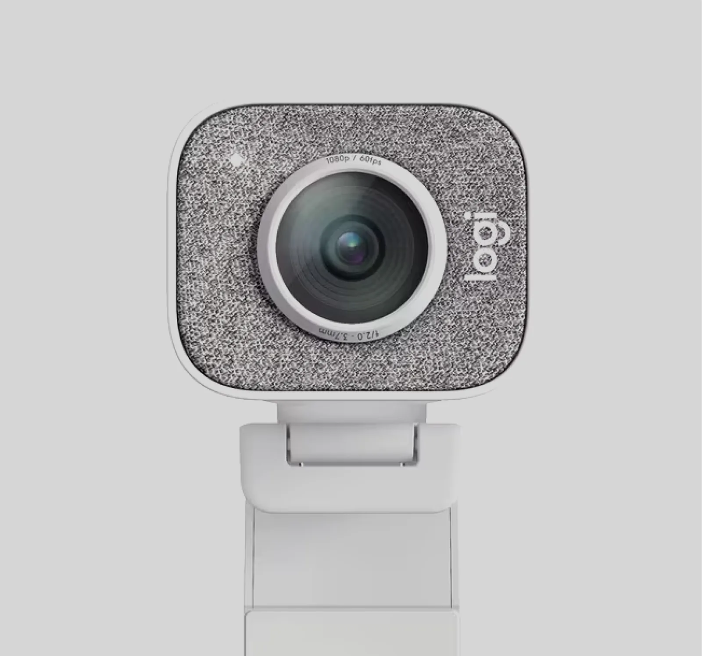
Reconnaître les marqueurs
une caméra lit les marqueurs présentés par les cubes.
Mon rôle et le prototype
Designer d’interactivité sur le projet, j’ai travaillé sur le recueil des besoins et sur l’interface entre les participants et le dispositif. J’ai participé aux recherches, aux essais et au choix de la solution.
J’ai coordonné le travail de l’équipe : Enora Jaffré en design d’interactivité, Élise Croguennoc et Mathis Chiron en design produit et industriel, Amandine Quintin en design d’architecture. J’échangeais aussi avec le développeur du projet.
Nous avons prototypé avec Arduino, de l’électronique et Unity pour les interactions 3D. Avant la solution finale, nous avions testé la réalité augmentée avec Unity et Vuforia. J’ai aussi contribué à l’identité graphique : logo, typographie et couleurs.
Prototypage et ouverture
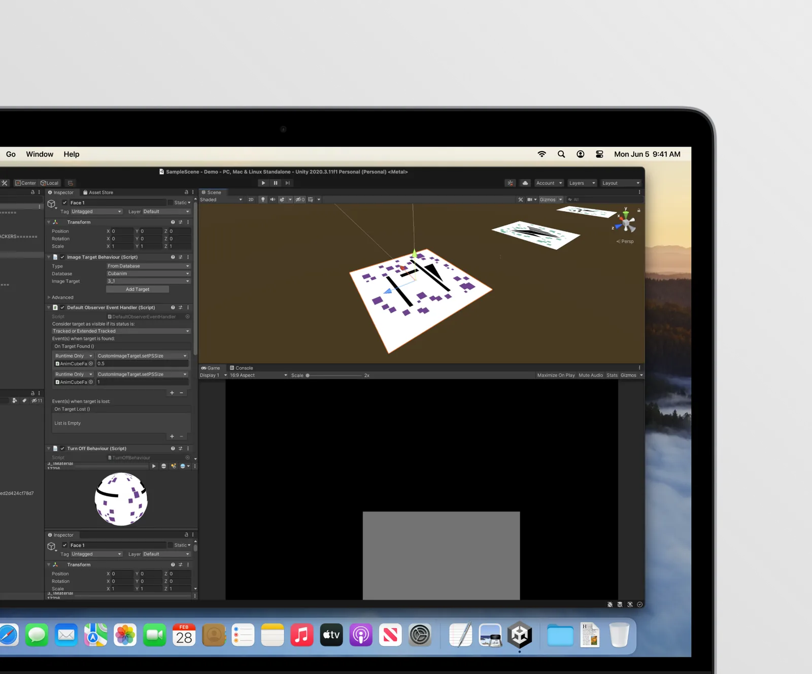
Relier objet et visuel
travail dans Unity autour des marqueurs et des interactions 3D.
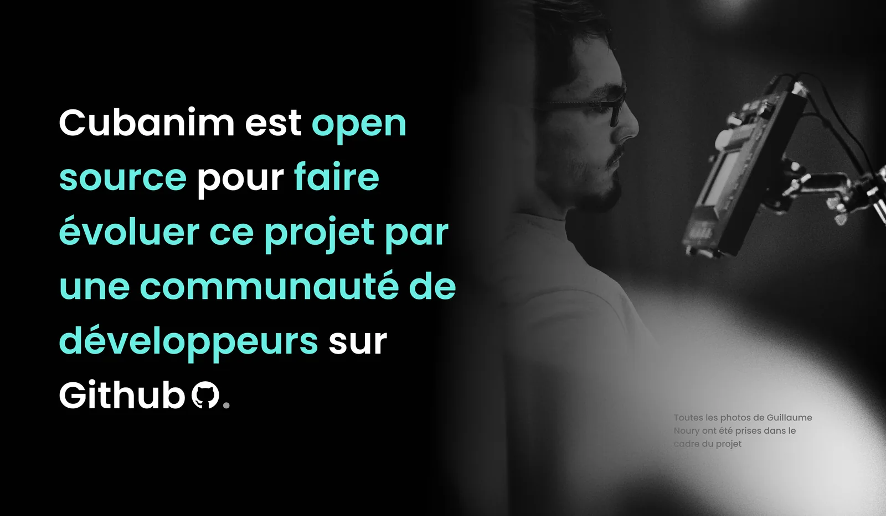
Faire évoluer le projet
le projet a été pensé en open source, pour qu’une communauté de développeurs puisse le faire évoluer. Voir Cubanim sur GitHub
Ce que j’en retiens
Quand saisir un objet est difficile pour certains utilisateurs, le geste se conçoit en le testant. Ce sont les essais de manipulation qui ont fait évoluer nos pistes, jusqu’à un geste simple : tourner un cube, relié à un paramètre visible de l’animation.
Le projet m’a aussi appris à faire avancer ensemble plusieurs disciplines, du design produit à l’architecture, et à traduire avec le développeur des besoins de manipulation en commandes physiques.